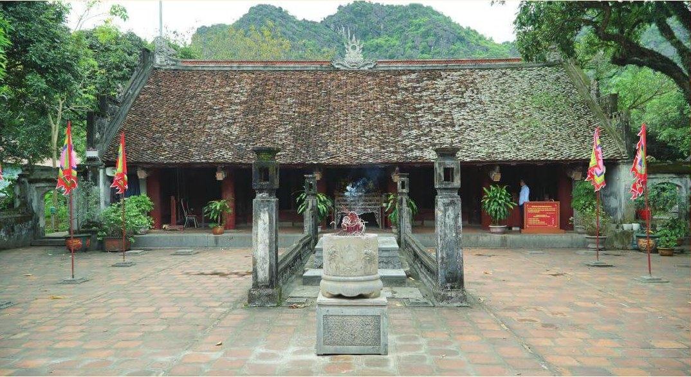

CỐ ĐÔ HOA LƯ
레 왕 사당

레 다이 한(Lê Đại Hành) 왕의 사당은 17세기에 옛 궁궐터 바로 그 자리에 지어지기 시작했습니다. 이 사당은 딘 왕 사당과 조화를 이루는 '내공외국(안은 工자, 밖은 國자 형태)'의 건축 양식을 띠고 있으며, 후레(Hậu Lê) 시대의 독특한 조각 부위들을 온전히 보존하고 있습니다.
사당의 회랑 구역에서 관광객들은 17세기 목조 조각 예술의 정수를 감상할 수 있습니다. 겹도리(chồng rường) 구조에는 연꽃, 국화 무늬와 정교하게 양식화된 용의 형상이 돋보입니다. 특히 고결한 연꽃과 호랑이, 대나무 숲의 이미지가 결합된 것은 깊은 인과응보의 철학을 담고 있을 뿐만 아니라 레 호안(Lê Hoàn) 왕의 탄생에 얽힌 신성한 전설도 내포하고 있습니다.
또한 6개의 회랑 서까래(bẩy hiên)는 장인들에 의해 대들보에 밀착되어 뻗어 나가는 6마리의 용의 몸통으로 솜씨 좋게 조각되었으며, '용호상봉(Long Hổ hội ngộ)', 불을 뿜고 구슬을 머금은 용 등의 주제와 어우러져 매우 생동감 넘치는 투조 작품을 만들어냅니다.


문을 지나 세 개의 건물로 구성된 '공(Công)' 자형 설계의 내전 구역 깊숙이 들어가면, 선조들의 장엄함과 뛰어난 재능을 차례로 뚜렷하게 느낄 수 있습니다.
배당(Bái đường, 공동(여러 신)을 모시는 곳): 나무로 양식화한 상아 모양의 쌍도리가 강렬한 인상을 줍니다. 이는 지붕을 받치는 하중을 견디는 역할과 동시에 전통 건축의 서까래 끝을 교묘하게 가려주는 최고의 기술입니다.
소향(Thiêu hương): 전레(Tiền Lê) 왕조의 공신들을 기리는 공간으로, 둥지에 있는 용, 무리 지은 용 등의 활동적인 장면이 매우 정교하게 조각된 아치형 나무 칸막이(ván mê) 시스템이 돋보이며, 번성과 풍요에 대한 소망을 담고 있습니다.
정궁(Chính cung): 레 다이 한 왕, 즈엉 반 응아(Dương Vân Nga) 태후, 카이 민 왕(Khai Minh Vương) 레 롱 딘(Lê Long Đĩnh)의 동상을 엄숙하게 모신 곳입니다.


레 다이 한 왕(휘는 레 호안)은 941년 쩌우아이(Châu Ái, 현 타인호아성)에서 태어났습니다. 부모를 일찍 여의고 레(Lê) 성을 가진 관찰사의 양자가 되었습니다. 성인이 된 레 호안은 딘 왕의 장남인 남월왕 딘 리엔을 보좌하며 큰 뜻을 품은 인물임을 분명히 보여주어, 딘 보 린(Đinh Bộ Lĩnh)으로부터 지용을 겸비한 인물이라는 칭찬을 받고 군사 통솔을 맡게 되었습니다. 국가에 12사군의 내전이 일어났을 때 레 호안은 반란 진압에 참여하여 많은 전공을 세웠습니다. 국가가 통일되자 딘 띠엔 황은 레 호안을 십도장군(Thập đạo tướng quân)으로 봉했습니다. 980년 딘 왕조가 끝나고 레 호안이 황제에 즉위하여 전레(Tiền Lê) 왕조를 세우고 연호를 티엔푹(Thiên Phúc, 천복)이라 하였습니다.
즉위 후, 레 다이 한 왕은 두 가지 빛나는 전공을 세웠습니다. 바로 송나라에 맞서 항전하고 참파(Chiêm Thành)를 평정한 것입니다.
첫 번째는 항송(항전)의 전공(981년)입니다. 왕의 직접적이고 탁월한 지휘 아래 아군과 백성은 속전속결 전략을 실행하여 박당(Bạch Đằng) 강 어귀에서 적의 수군 병력을 전멸시키고, 찌랑(Chi Lăng)에서 많은 적장들을 사로잡아 송나라 조정이 군대 철수를 명령하도록 만들었습니다.
두 번째는 참파 군대 평정 작전(982년)입니다. 이는 민족 역사상 최초의 남벌(南伐)로, 눈부신 승리를 거두어 대구월(Đại Cồ Việt) 국가의 주권과 위상을 강력하게 확인시켰습니다.
레 다이 한 왕은 뛰어난 군사 전략가였을 뿐만 아니라, 국가가 평화로울 때는 내치 강화에도 각별한 관심을 기울였습니다. 그는 교역을 발전시키기 위해 "티엔푹(Thiên Phúc)" 화폐를 주조하게 했고, 도로를 넓히고 농업을 위한 수리 시설을 확충했으며, 로(Lộ), 푸(Phủ)부터 쩌우(Châu)에 이르는 행정 체계를 완비했습니다. 1005년 왕이 승하하며 태평성대한 국가의 기반을 남겼습니다. 이후 아들 레 롱 딘이 왕위를 이어받아 4년간 통치했고, 1010년에 리(Lý) 왕조가 도읍을 호아루에서 탕롱(Thăng Long)으로 천도하면서 역사는 새로운 장을 넘기게 됩니다.
이 신성한 공간에 오면 10세기 역사에서 가장 강인하고 대표적인 여성 중 한 명인 즈엉 반 응아(Dương Vân Nga) 태후를 빼놓을 수 없습니다.
딘 띠엔 황 왕이 승하하고 겨우 6세인 어린 왕 딘 또안이 왕위에 올랐을 때, 송나라 군대가 침략의 기회를 엿보며 국가는 '백척간두'의 위기에 빠졌습니다. 민족의 존망 앞에서 태후는 모든 사적인 이익과 가문의 이익을 배제하고, 딘 왕조의 용포를 십도장군 레 호안에게 건네주어 그를 왕위에 올림으로써 국가라는 배의 키를 잡고 전쟁의 참화를 이겨내도록 결정했습니다. 시의적절하고 용감하며 통찰력 넘치는 그 결정은 훗날 송나라와의 항전 및 참파 평정에서 거둔 눈부신 승리의 확고한 법적 기반을 마련했습니다.

오늘날 레 다이 한 왕의 사당은 후세 사람들이 선제들에 대해 품고 있는 깊은 존경과 감사의 상징일 뿐만 아니라, 우리 각자를 고도(古都)의 땅에서 선조들의 웅장했던 기개와 맞닿게 해주는 역사의 가교이기도 합니다.